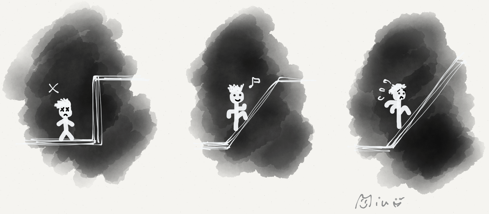
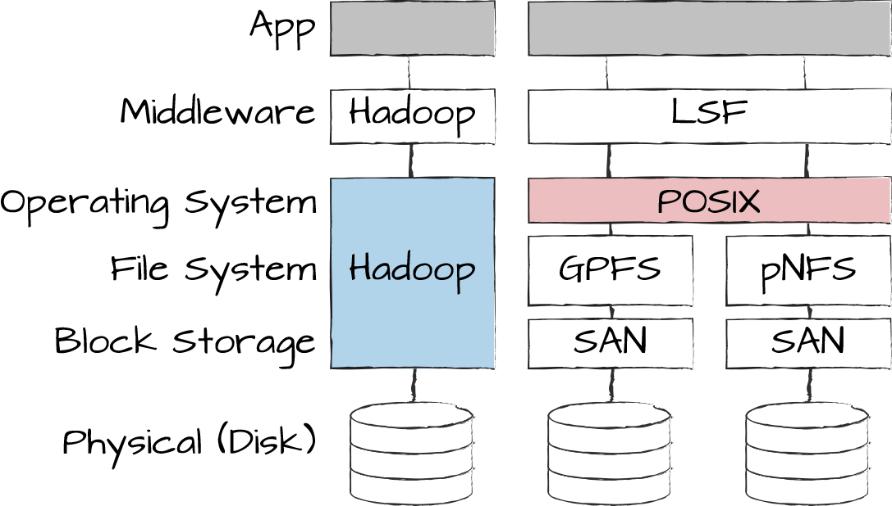

Build a Ramp for the Reader, Not a Cliff!

Martin Fowler occasionally introduces himself as a guy “who is good at explaining things.” Although this certainly has a touch of British Understatement™, it also highlights a critically important but rare skill in IT. Too often technical people either produce an explanation at such a high level that it is almost meaningless or spew out reams of technical jargon with no apparent rhyme or reason.
A team of architects once presented a new hardware and software stack for high-performance computing to a management steering committee. The material covered everything from workload management down to storage hardware. It contrasted vertically integrated stacks like Hadoop and Hadoop Distributed File System (HDFS) against standalone workload management solutions like Platform Load Sharing Facility (LSF). In one of the comparison slides “POSIX compliance” jumped out as a selection criteria. While this may be entirely appropriate, how do you explain to someone who knows little about filesystems what this means, why it is important, and what the ramifications are?
We often refer to learning curves as steep, meaning it is tough for newcomers to become familiar with, or “ramp up” on, a new system or tool. I tend to assume my executive audience is quite intelligent (you don’t get that high up simply by brown-nosing and playing politics), so they can in fact climb up a pretty steep learning ramp. What they cannot do is climb up a vertical cliff. Building a logical sequence that enables the audience to draw conclusions in an unfamiliar domain can be “steep” but doable. Being bombarded with out-of-context acronyms or technical jargon constitutes a “cliff.” “POSIX compliance” is a cliff for most people.
You can turn it into a ramp by explaining that POSIX is a standard programming interface for file access, which is widely adhered to by Unix distributions, thus reducing lock-in in case you’re maintaining multiple Linux flavors. With this ramp, executives can reason that because they already standardized on a single Linux distribution, POSIX compliance doesn’t add much value. It’s also not relevant for vertically integrated systems like Hadoop, which include the filesystem.
By building a ramp out of just a few words, you managed to involve someone who isn’t deeply technical in the decision-making process. The ramp might not take the audience into the depths of POSIX versions and Linux flavors, but it provides a mental model to reason within the scope of the proposed decision.
A steep ramp is suitable for a quick climb but becomes tiresome if you are trying to lead your audience up Mount Everest. Therefore, consider how high (or deep) your audience needs to go to reason about what is presented. When defining terms, define them within the context of your problem, highlighting the relevant properties and omitting irrelevant detail. For example, details about POSIX history and Linux Standard Base aren’t pertinent to the decision above and should be omitted.
The ramp should not only provide a reasonable incline but also avoid gaps or jumps in logic. Experts often don’t perceive these gaps because their mind silently fills them in. This is a phenomenal feature of our brain, but an audience not intimately familiar with the topic is likely to stumble over even a minor gap and lose track of the line of reasoning. This effect is known as the curse of knowledge: once you know something, it’s very hard to imagine how someone else learns it.
At a discussion about network security, a team of architects presented their requirement that servers located in the untrusted network zone have separate network interfaces, so-called NICs, for incoming and outgoing network traffic to avoid a direct network path from the internet to trusted systems. They continued with a statement that the vendor’s “three-NIC design” cannot meet their requirement. To me, this made no sense: why is a server with three network interfaces unable to support a design requiring two interfaces, one for incoming traffic and one for outgoing? The answer was “obvious” to those who are familiar with the context: each server uses one additional network interface each for backup and management tasks, bringing the number of required ports to four, which clearly exceeds three. Skipping this detail created a gap large enough for the audience (and me) to stumble.
How big a gap they are creating is difficult to judge for the presenter. That’s the curse of knowledge. In the example above, just a few words or two additional labeled lines in the diagram would have been enough to bridge the gap. That, however, doesn’t imply that the gap itself was small—it might have been narrow, but plenty deep.
Presenting your line of reasoning to a person not familiar with the topic and asking them to “teach back” what you explained to them, similar to holding a pop quiz (Chapter 21), can be a great help in finding gaps.
When preparing technical conversations, I tend to use a two-step approach: first I set out to establish a basic mental model based on plain vocabulary without product names or acronyms. Once equipped with this, the audience is able to reason in the problem space and to discern the relevance of parameters. This mental model doesn’t have to be anything formal, it merely needs to give the audience a way to make a connection between the different elements that are being described.
In the aforementioned filesystem example, I would first describe how file access is composed of a layered stack spanning from hardware (i.e., disk), basic block storage (like a SAN) to filesystems, and ultimately the operating system, which hosts the applications on top. This explanation doesn’t even occupy half a slide and would nicely fit into a picture of layered blocks (see Figure 18-1).
As a second step, I can use this vocabulary to explain that Hadoop is integrated from the application layer all the way down to the local filesystem and disks without any SAN or the like. This setup has specific advantages, such as low cost and data locality, but requires you to build applications for this particular framework. In contrast, standalone filesystems for high-performance computing, for example GPFS or pNFS, either build on top of standard filesystems or provide “adapters” that make the proprietary filesystem available through widespread APIs, such as POSIX.

You depict this in a diagram by having the Hadoop “stack” reach all the way from top to bottom, whereas other systems provide “seams,” including POSIX compliance. The audience can now easily understand why the POSIX feature is important, but HDFS doesn’t need to provide it.
Determining the appropriate level of detail to support the line of reasoning is difficult. For example, we pretended “POSIX” is a single thing when in reality there are many different versions and components, the Linux Standard Base, and so on. The ability to draw the line at roughly the right level of detail is an important skill of an architect. Many developers or IT specialists love to inundate their audience with irrelevant jargon. Others consider it all terribly obvious and leave giant gaps by omitting critical details. As so often, the middle ground is where you want to be.
Drawing the line at the correct level of detail depends on you knowing your audience. If your audience is mixed, building a good ramp is ever more important because it allows you to catch up folks who aren’t familiar with the details without boring those who are. The highest form is building a ramp that audience members already familiar with the subject matter appreciate despite not having learned anything new. This is tough to achieve but is a noble goal to aim for.
Building a steep, but logical ramp allows those unfamiliar with the topic to get up to speed without boring those who are.
Getting the level of detail “just right” is usually a crapshoot, even if you do know the audience. At least as important, though, is sticking to a consistent level of detail. If you describe high-level filesystems on slide one and then dive into bit encoding on magnetic disks in slide two, you are almost guaranteed to either bore or lose your audience. Therefore, strive to find a line that maintains cohesion for reasoning about the architectural decision at hand, without leaving too many “dangling” aspects.
Algorithm-minded people would phrase this challenge as a graph partition problem: your topic consists of many elements that are logically connected, just like a graph of nodes connected by edges. Your task is to split the graph (i.e., to cover only a subset of the elements), while minimizing the number of edges (i.e., logical connections) being cut.
This poor translation of Karl Valentin’s famous quote “Mögen hätt’ ich schon wollen, aber dürfen habe ich mich nicht getraut” reminds me of the biggest challenge in explaining technical matter: too many architects believe their audience will never “get” their explanations, anyway. Some are also afraid that presenting technical detail will make them appear unfit for management. Therefore, even though they might have been able to, they’re shying away from attempting to present technical concepts to a senior audience. In my view, this is a missed opportunity. I see every interaction with management also as a teaching opportunity. It’s the basis for the Architect Elevator.
Every interaction with senior management is also a teaching opportunity. Use it!
Others go a step further and actually prefer to confuse management with random jargon, acronyms, and product names so that their “decisions” (often simply preferences or vendor recommendations) aren’t unnecessarily put into question by the audience. This usually happens when technical teams, which see approval meetings as a nuisance rather than an opportunity to gather feedback, play off management’s insecurity when it comes to technical topics.
I have a rather critical view of such behavior and generally advise management not to approve anything that isn’t crystal clear to them. After all, if something isn’t easily comprehensible, it’s due to lack of clarity, not the audience.
Your role as an architect is to build a broad understanding of the ramifications of decisions and assumptions that were made. Without it, big problems are bound to pop up. For example, if a few years down the road an IT system can no longer serve the business needs, it is often due to a constraint or an invalid assumption that was made but never clearly communicated. Communicating decisions and explaining trade-offs clearly protects both you and the business.